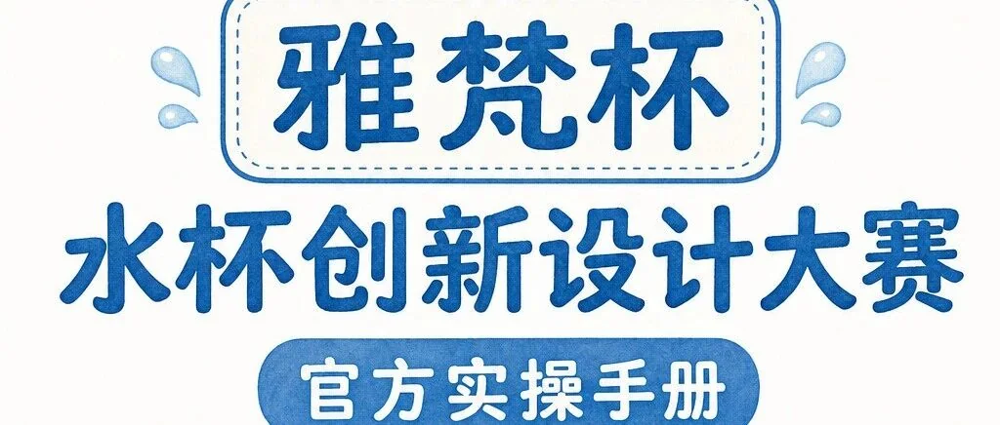
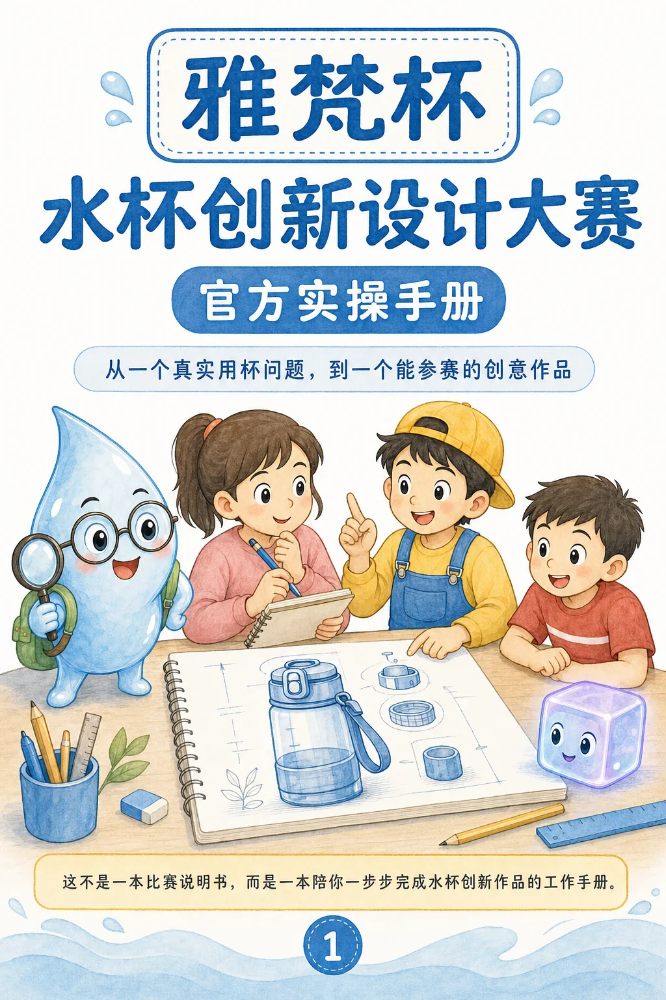
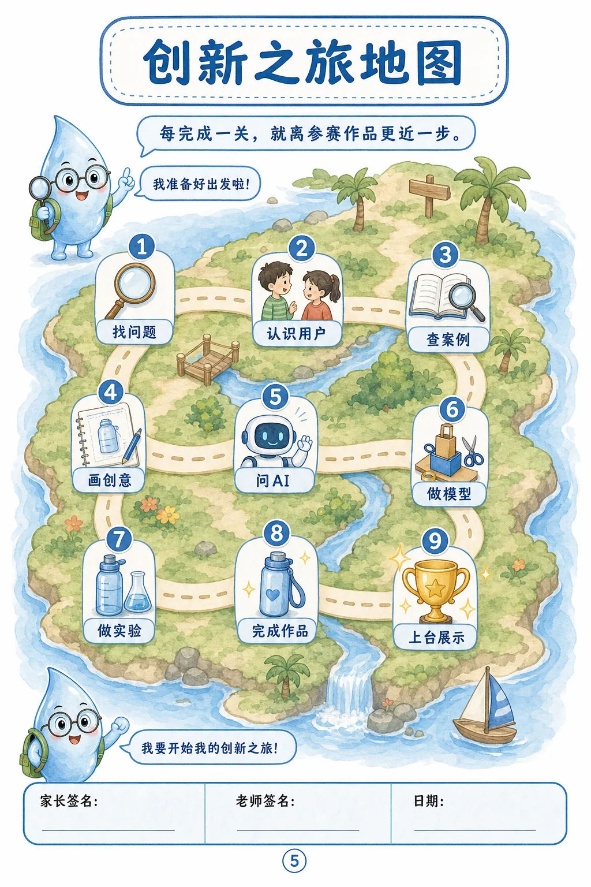
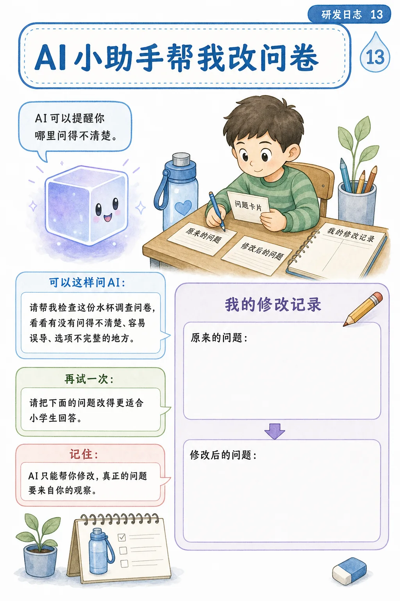
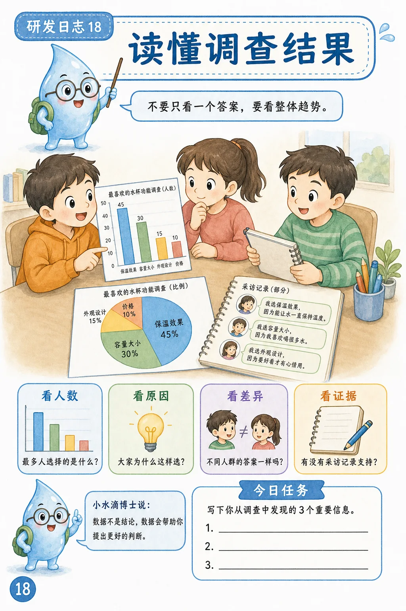
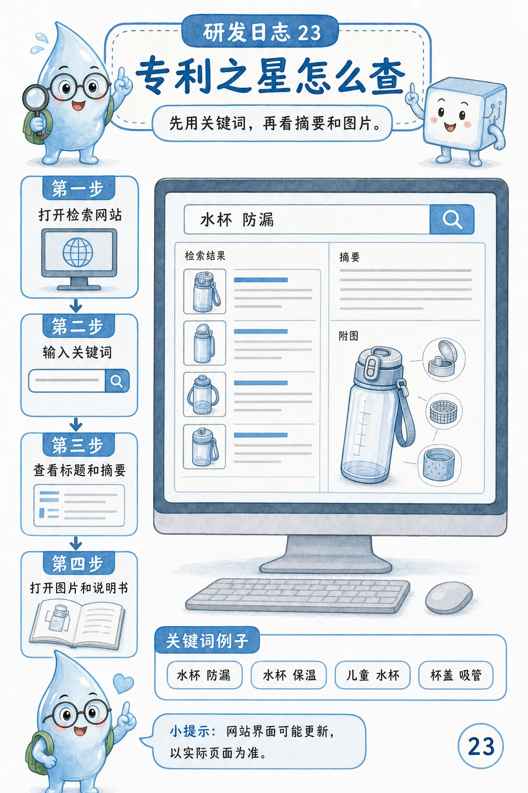
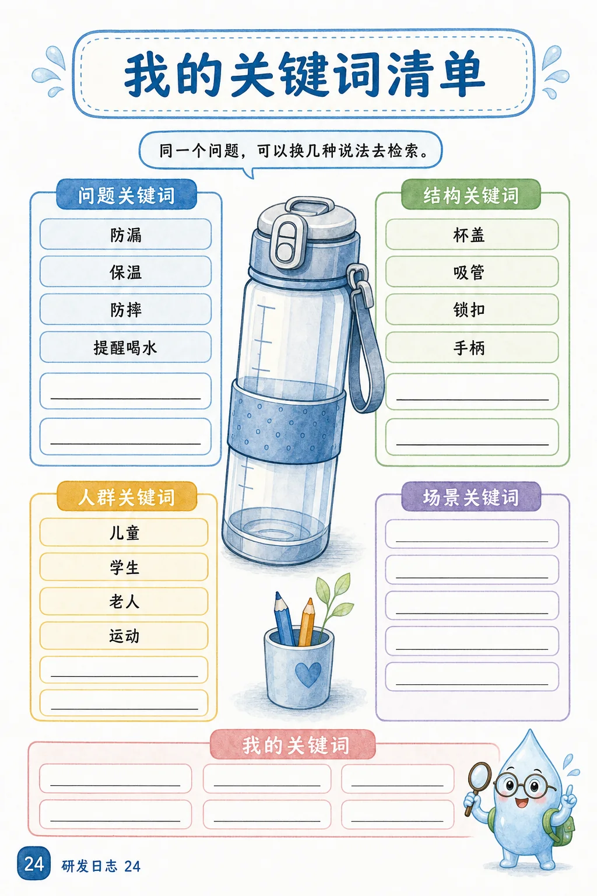

Youth Innovation Manual / Practical Workbook
“雅梵杯”水杯创新设计参赛实操手册：从真实问题到参赛作品
这不是一本让学生背概念的手册，而是一套边做边填的创新工作簿。它把水杯这个日常产品拆成可观察、可调查、可检索、可制作、可测试、可答辩的完整科创项目。

为什么这个手册有方法论意义
很多青少年科创活动最大的问题，是学生一开始就被要求“想一个好点子”。但真实创新很少从空想开始，它通常从一个具体场景中的真实麻烦开始：谁在什么情况下用杯子，遇到了什么问题，这个问题是否频繁、是否严重、是否值得通过设计来解决。
这份手册把比赛任务重新设计为一条路线：发现真实问题 → 设计问卷调查 → 统计并聚焦问题 → 检索现有专利与产品 → 产生创意方案 → 制作 MVP 原型 → 用 AI 辅助 3D 表达 → 测试迭代 → 准备答辩与知识产权材料。
对我的个人 IP 来说，它体现的是一个核心能力：把专利审查、发明创造、产品设计和青少年创新教育翻译成学生真正可以执行的步骤。

第一步：不要先想“智能水杯”，先观察真实用杯场景
手册的第一关不是让学生立即画一个漂亮水杯，也不是鼓励学生堆功能，而是让他们先回到真实场景：教室、操场、书包、家里、外出、老人喝热水、家长给孩子带水、老师在办公室补水。
例如，水杯放在桌角容易碰倒，这是教室场景里的防倒需求；圆柱杯放进书包占空间并且容易漏，这是携带场景里的便携与防漏需求；老人担心水太烫，这是家庭场景里的温度感知问题。
好的科创题目可以很小，但问题必须真实；功能可以简单，但最好能被测试；设计可以大胆，但必须说清楚为什么这样设计。

第二步：问卷不是求表扬，而是验证问题是否真实
很多学生做问卷时喜欢问：“你觉得这个水杯好吗？”“你喜欢智能水杯吗？”这些问题看似友好，但无法支持一个科创项目。手册要求学生问行为、频率、场景、原因和现有解决办法。
例如，不问“你觉得防漏重要吗”，而是问“你的水杯过去一个月有没有漏水？发生在书包、桌面还是运动时？”这样学生才能把模糊态度转化为具体证据。
手册还提醒学生避免收集姓名、电话、住址等隐私信息。青少年创新教育不能只追求作品，更要训练基本的研究伦理和数据意识。


第三步：把“大想法”聚焦成“小问题”
调查完成后，学生不能直接写“大家都需要智能水杯”。手册要求他们统计三类关键数据：问题发生频率、问题严重程度、用户是否愿意接受改进方案。
一个好的项目聚焦句应该是：我想帮助【目标用户】在【具体场景】解决【具体痛点】，通过【核心设计】实现【可验证效果】。这句话看起来朴素，却能把科创项目从口号拉回到可执行路径。
例如，“我想做一个智能水杯”太大；“我想帮助低年级学生在书包携带场景中减少漏水，通过可视化锁止提示实现装包前检查”就更接近一个可以调查、制作和测试的项目。
第四步：专利检索不是复制，而是看清已有方案和剩余空间
手册专门安排了专利之星检索环节。对青少年科创而言，专利检索的目的不是让学生复制别人的结构，而是理解已有技术解决了什么问题、还有哪些不足、自己的方案可以怎样不同。
学生需要把问题拆成对象、功能、场景和结构。例如“水杯 + 防漏 + 杯盖 + 密封圈”，再继续扩展同义词：水杯、杯子、饮水杯、保温杯、运动水壶。通过“先宽后窄”的方式，他们会逐渐理解技术方案不是凭空出现的，而是在已有方案边界上寻找新的改进空间。


第五步：MVP、AI 3D 表达和测试迭代
MVP 是最小可行作品，不是最终商品。学生只需要先证明一个核心想法是否成立。比如防漏提醒水杯，第一版 MVP 也许只需要证明“锁扣没有扣好时能被看见或提醒”。
手册把原型分成纸板外形模型、结构功能模型、电子功能模型和展示模型。这样不同年龄、不同能力水平的学生都能找到适合自己的完成方式。
AI 3D 表达也被纳入流程，但手册明确提醒：AI 生成的概念图和 3D 模型不是最终生产图纸，必须经过人工检查、结构判断、比例确认和打印测试。创新教育中的 AI 应该是放大表达能力，而不是替代真实思考。
第六步：答辩不是背稿，而是讲清创新证据链
一个成熟的学生项目，答辩时要讲清五件事：问题现场、调查与数据、已有技术与产品、我的方案、测试与下一步。评委关心的不是“我觉得很好”，而是学生是否真的观察过、调查过、检索过、制作过、测试过、修改过。
知识产权部分也不应该只停留在“我要申请专利”的口号。学生应保留发明日志、草图、调查记录、检索记录、模型照片和测试数据。这些材料既能支持答辩，也能体现真实参与过程。
这个案例对网站内容的意义
这份手册可以成为网站“青少年创新”系列里的长期内容资产。它证明我的方法论可以进入真实比赛、真实学校、真实企业产品场景，并且可以被拆解为学生能执行的步骤。
后续这套内容还可以继续扩展为多篇文章：如何设计科创问卷、如何做青少年专利检索、如何把产品问题转化为发明点、如何用 AI 辅助学生做 3D 表达、如何训练科创答辩。